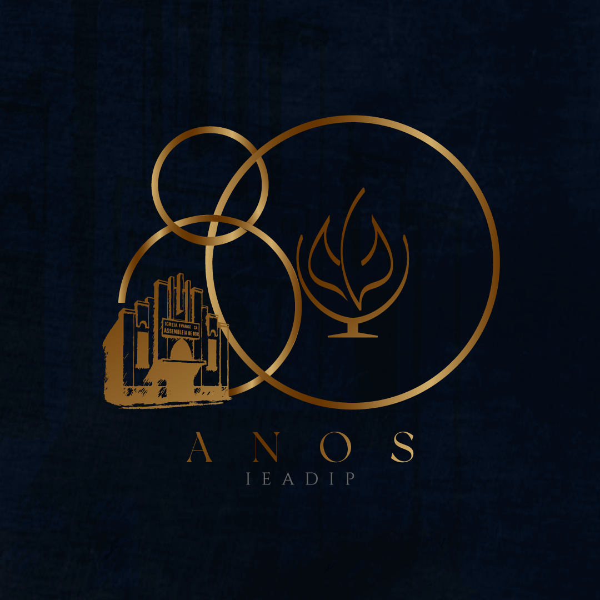

Esse vai ser meu primeiro site criado sozinho
Hoje eu decidi criar meu primeiro site sozinho, vou colocar imagens, videos e links dentro dele para que eu possa treinar cada dia mais.
Vou fazer uma pequena tabela com a minha biografia
- Nome: Rafael Corrêa da Silva
- Idade: 19 anos
- Data de nascimento: 28/04/2006
- Nascionalidade: Brasileiro
- Coisas favorita
- Endereço: Tamôios, 1171
- Jogar video game
- Ir para a igreja
- Fazer academia
Agora vou colocar a imagem de perfil da igreja que sou o líder da Mídia
Essa é a imagem de perfil do Instagram

Clicando aqui você poderá acessar o Instagram da igreja.
Rua Guaicurus, 520 - Guimarânia - MG
Agora você poderá acessar um video que foi publicado no Intagram da Igreja
Esse é o video
Agora você poderá escutar um aúdio